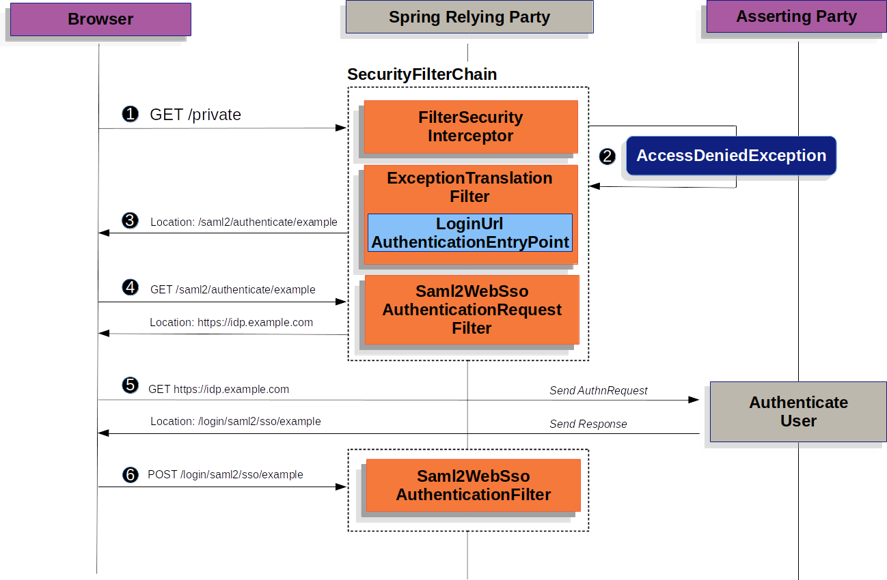
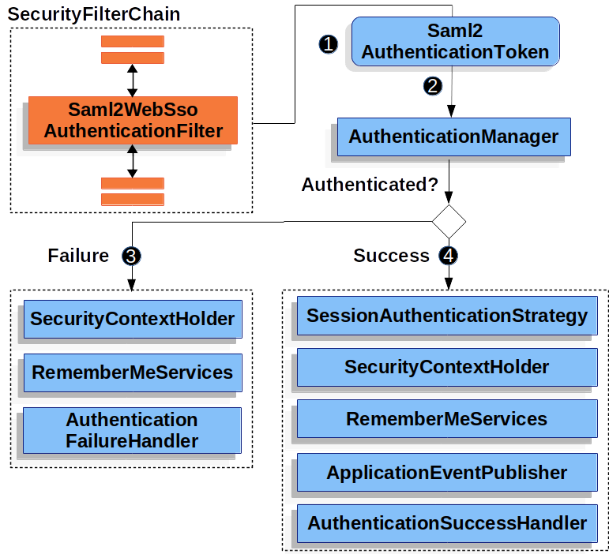
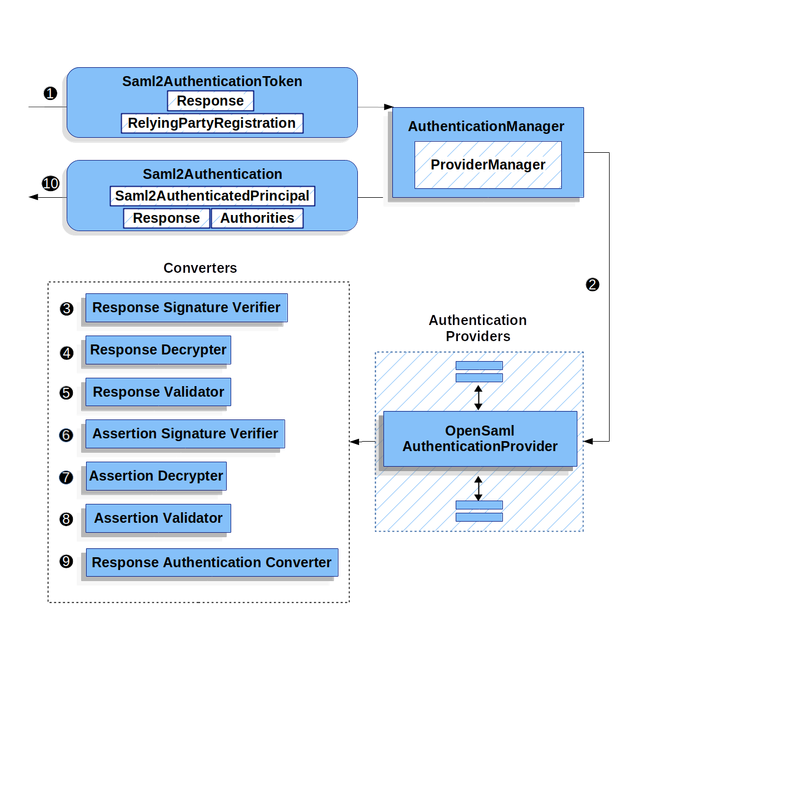

|
This version is still in development and is not considered stable yet. For the latest stable version, please use Documentation 6.0.2! |
SAML 2.0 Login Overview
We start by examining how SAML 2.0 Relying Party Authentication works within Spring Security. First, we see that, like OAuth 2.0 Login, Spring Security takes the user to a third party for performing authentication. It does this through a series of redirects:

|
The figure above builds off our |
First, a user makes an unauthenticated request to the /private resource, for which it is not authorized.
 Spring Security’s
Spring Security’s FilterSecurityInterceptor indicates that the unauthenticated request is Denied by throwing an AccessDeniedException.
 Since the user lacks authorization, the
Since the user lacks authorization, the ExceptionTranslationFilter initiates Start Authentication.
The configured AuthenticationEntryPoint is an instance of LoginUrlAuthenticationEntryPoint, which redirects to the <saml2:AuthnRequest> generating endpoint, Saml2WebSsoAuthenticationRequestFilter.
Alternatively, if you have configured more than one asserting party, it first redirects to a picker page.
Next, the Saml2WebSsoAuthenticationRequestFilter creates, signs, serializes, and encodes a <saml2:AuthnRequest> using its configured Saml2AuthenticationRequestFactory.
 Then the browser takes this
Then the browser takes this <saml2:AuthnRequest> and presents it to the asserting party.
The asserting party tries to authentication the user.
If successful, it returns a <saml2:Response> back to the browser.
The browser then POSTs the <saml2:Response> to the assertion consumer service endpoint.
The following image shows how Spring Security authenticates a <saml2:Response>.

<saml2:Response>|
The figure builds off our |
When the browser submits a <saml2:Response> to the application, it delegates to Saml2WebSsoAuthenticationFilter.
This filter calls its configured AuthenticationConverter to create a Saml2AuthenticationToken by extracting the response from the HttpServletRequest.
This converter additionally resolves the RelyingPartyRegistration and supplies it to Saml2AuthenticationToken.
 Next, the filter passes the token to its configured
Next, the filter passes the token to its configured AuthenticationManager.
By default, it uses the OpenSamlAuthenticationProvider.
 If authentication fails, then Failure.
If authentication fails, then Failure.
-
The
SecurityContextHolderis cleared out. -
The
AuthenticationEntryPointis invoked to restart the authentication process.
If authentication is successful, then Success.
-
The
Authenticationis set on theSecurityContextHolder. -
The
Saml2WebSsoAuthenticationFilterinvokesFilterChain#doFilter(request,response)to continue with the rest of the application logic.
Minimal Dependencies
SAML 2.0 service provider support resides in spring-security-saml2-service-provider.
It builds off of the OpenSAML library.
Minimal Configuration
When using Spring Boot, configuring an application as a service provider consists of two basic steps: . Include the needed dependencies. . Indicate the necessary asserting party metadata.
| Also, this configuration presupposes that you have already registered the relying party with your asserting party. |
Specifying Identity Provider Metadata
In a Spring Boot application, to specify an identity provider’s metadata, create configuration similar to the following:
spring:
security:
saml2:
relyingparty:
registration:
adfs:
identityprovider:
entity-id: https://idp.example.com/issuer
verification.credentials:
- certificate-location: "classpath:idp.crt"
singlesignon.url: https://idp.example.com/issuer/sso
singlesignon.sign-request: falsewhere:
-
idp.example.com/issueris the value contained in theIssuerattribute of the SAML responses that the identity provider issues. -
classpath:idp.crtis the location on the classpath for the identity provider’s certificate for verifying SAML responses. -
idp.example.com/issuer/ssois the endpoint where the identity provider is expectingAuthnRequestinstances.
And that’s it!
|
Identity Provider and Asserting Party are synonymous, as are Service Provider and Relying Party. These are frequently abbreviated as AP and RP, respectively. |
Runtime Expectations
As configured earlier, the application processes any POST /login/saml2/sso/{registrationId} request containing a SAMLResponse parameter:
POST /login/saml2/sso/adfs HTTP/1.1
SAMLResponse=PD94bWwgdmVyc2lvbj0iMS4wIiBlbmNvZGluZ...There are two ways to induce your asserting party to generate a SAMLResponse:
-
You can navigate to your asserting party. It likely has some kind of link or button for each registered relying party that you can click to send the
SAMLResponse. -
You can navigate to a protected page in your application — for example,
localhost:8080. Your application then redirects to the configured asserting party, which then sends theSAMLResponse.
From here, consider jumping to:
How SAML 2.0 Login Integrates with OpenSAML
Spring Security’s SAML 2.0 support has a couple of design goals:
-
Rely on a library for SAML 2.0 operations and domain objects. To achieve this, Spring Security uses OpenSAML.
-
Ensure that this library is not required when using Spring Security’s SAML support. To achieve this, any interfaces or classes where Spring Security uses OpenSAML in the contract remain encapsulated. This makes it possible for you to switch out OpenSAML for some other library or an unsupported version of OpenSAML.
As a natural outcome of these two goals, Spring Security’s SAML API is quite small relative to other modules.
Instead, such classes as OpenSamlAuthenticationRequestFactory and OpenSamlAuthenticationProvider expose Converter implementationss that customize various steps in the authentication process.
For example, once your application receives a SAMLResponse and delegates to Saml2WebSsoAuthenticationFilter, the filter delegates to OpenSamlAuthenticationProvider:
Response
This figure builds off of the Saml2WebSsoAuthenticationFilter diagram.
The Saml2WebSsoAuthenticationFilter formulates the Saml2AuthenticationToken and invokes the AuthenticationManager.
 The
The AuthenticationManager invokes the OpenSAML authentication provider.
 The authentication provider deserializes the response into an OpenSAML
The authentication provider deserializes the response into an OpenSAML Response and checks its signature.
If the signature is invalid, authentication fails.
Then the provider decrypts any EncryptedAssertion elements.
If any decryptions fail, authentication fails.
 Next, the provider validates the response’s
Next, the provider validates the response’s Issuer and Destination values.
If they do not match what’s in the RelyingPartyRegistration, authentication fails.
After that, the provider verifies the signature of each Assertion.
If any signature is invalid, authentication fails.
Also, if neither the response nor the assertions have signatures, authentication fails.
Either the response or all the assertions must have signatures.
Then, the provider ,decrypts any EncryptedID or EncryptedAttribute elements].
If any decryptions fail, authentication fails.
Next, the provider validates each assertion’s ExpiresAt and NotBefore timestamps, the <Subject> and any <AudienceRestriction> conditions.
If any validations fail, authentication fails.
Following that, the provider takes the first assertion’s AttributeStatement and maps it to a Map<String, List<Object>>.
It also grants the ROLE_USER granted authority.
And finally, it takes the NameID from the first assertion, the Map of attributes, and the GrantedAuthority and constructs a Saml2AuthenticatedPrincipal.
Then, it places that principal and the authorities into a Saml2Authentication.
The resulting Authentication#getPrincipal is a Spring Security Saml2AuthenticatedPrincipal object, and Authentication#getName maps to the first assertion’s NameID element.
Saml2AuthenticatedPrincipal#getRelyingPartyRegistrationId holds the identifier to the associated RelyingPartyRegistration.
Customizing OpenSAML Configuration
Any class that uses both Spring Security and OpenSAML should statically initialize OpenSamlInitializationService at the beginning of the class:
-
Java
-
Kotlin
static {
OpenSamlInitializationService.initialize();
}companion object {
init {
OpenSamlInitializationService.initialize()
}
}This replaces OpenSAML’s InitializationService#initialize.
Occasionally, it can be valuable to customize how OpenSAML builds, marshalls, and unmarshalls SAML objects.
In these circumstances, you may instead want to call OpenSamlInitializationService#requireInitialize(Consumer) that gives you access to OpenSAML’s XMLObjectProviderFactory.
For example, when sending an unsigned AuthNRequest, you may want to force reauthentication.
In that case, you can register your own AuthnRequestMarshaller, like so:
-
Java
-
Kotlin
static {
OpenSamlInitializationService.requireInitialize(factory -> {
AuthnRequestMarshaller marshaller = new AuthnRequestMarshaller() {
@Override
public Element marshall(XMLObject object, Element element) throws MarshallingException {
configureAuthnRequest((AuthnRequest) object);
return super.marshall(object, element);
}
public Element marshall(XMLObject object, Document document) throws MarshallingException {
configureAuthnRequest((AuthnRequest) object);
return super.marshall(object, document);
}
private void configureAuthnRequest(AuthnRequest authnRequest) {
authnRequest.setForceAuthn(true);
}
}
factory.getMarshallerFactory().registerMarshaller(AuthnRequest.DEFAULT_ELEMENT_NAME, marshaller);
});
}companion object {
init {
OpenSamlInitializationService.requireInitialize {
val marshaller = object : AuthnRequestMarshaller() {
override fun marshall(xmlObject: XMLObject, element: Element): Element {
configureAuthnRequest(xmlObject as AuthnRequest)
return super.marshall(xmlObject, element)
}
override fun marshall(xmlObject: XMLObject, document: Document): Element {
configureAuthnRequest(xmlObject as AuthnRequest)
return super.marshall(xmlObject, document)
}
private fun configureAuthnRequest(authnRequest: AuthnRequest) {
authnRequest.isForceAuthn = true
}
}
it.marshallerFactory.registerMarshaller(AuthnRequest.DEFAULT_ELEMENT_NAME, marshaller)
}
}
}The requireInitialize method may be called only once per application instance.
Overriding or Replacing Boot Auto Configuration
Spring Boot generates two @Bean objects for a relying party.
The first is a SecurityFilterChain that configures the application as a relying party.
When including spring-security-saml2-service-provider, the SecurityFilterChain looks like:
-
Java
-
Kotlin
@Bean
public SecurityFilterChain filterChain(HttpSecurity http) throws Exception {
http
.authorizeHttpRequests(authorize -> authorize
.anyRequest().authenticated()
)
.saml2Login(withDefaults());
return http.build();
}@Bean
open fun filterChain(http: HttpSecurity): SecurityFilterChain {
http {
authorizeRequests {
authorize(anyRequest, authenticated)
}
saml2Login { }
}
return http.build()
}If the application does not expose a SecurityFilterChain bean, Spring Boot exposes the preceding default one.
You can replace this by exposing the bean within the application:
-
Java
-
Kotlin
@Configuration
@EnableWebSecurity
public class MyCustomSecurityConfiguration {
@Bean
public SecurityFilterChain filterChain(HttpSecurity http) throws Exception {
http
.authorizeHttpRequests(authorize -> authorize
.requestMatchers("/messages/**").hasAuthority("ROLE_USER")
.anyRequest().authenticated()
)
.saml2Login(withDefaults());
return http.build();
}
}@Configuration
@EnableWebSecurity
class MyCustomSecurityConfiguration {
@Bean
open fun filterChain(http: HttpSecurity): SecurityFilterChain {
http {
authorizeRequests {
authorize("/messages/**", hasAuthority("ROLE_USER"))
authorize(anyRequest, authenticated)
}
saml2Login {
}
}
return http.build()
}
}The preceding example requires the role of USER for any URL that starts with /messages/.
The second @Bean Spring Boot creates is a RelyingPartyRegistrationRepository, which represents the asserting party and relying party metadata.
This includes such things as the location of the SSO endpoint the relying party should use when requesting authentication from the asserting party.
You can override the default by publishing your own RelyingPartyRegistrationRepository bean.
For example, you can look up the asserting party’s configuration by hitting its metadata endpoint:
-
Java
-
Kotlin
@Value("${metadata.location}")
String assertingPartyMetadataLocation;
@Bean
public RelyingPartyRegistrationRepository relyingPartyRegistrations() {
RelyingPartyRegistration registration = RelyingPartyRegistrations
.fromMetadataLocation(assertingPartyMetadataLocation)
.registrationId("example")
.build();
return new InMemoryRelyingPartyRegistrationRepository(registration);
}@Value("\${metadata.location}")
var assertingPartyMetadataLocation: String? = null
@Bean
open fun relyingPartyRegistrations(): RelyingPartyRegistrationRepository? {
val registration = RelyingPartyRegistrations
.fromMetadataLocation(assertingPartyMetadataLocation)
.registrationId("example")
.build()
return InMemoryRelyingPartyRegistrationRepository(registration)
}
The registrationId is an arbitrary value that you choose for differentiating between registrations.
|
Alternatively, you can provide each detail manually:
-
Java
-
Kotlin
@Value("${verification.key}")
File verificationKey;
@Bean
public RelyingPartyRegistrationRepository relyingPartyRegistrations() throws Exception {
X509Certificate certificate = X509Support.decodeCertificate(this.verificationKey);
Saml2X509Credential credential = Saml2X509Credential.verification(certificate);
RelyingPartyRegistration registration = RelyingPartyRegistration
.withRegistrationId("example")
.assertingPartyDetails(party -> party
.entityId("https://idp.example.com/issuer")
.singleSignOnServiceLocation("https://idp.example.com/SSO.saml2")
.wantAuthnRequestsSigned(false)
.verificationX509Credentials(c -> c.add(credential))
)
.build();
return new InMemoryRelyingPartyRegistrationRepository(registration);
}@Value("\${verification.key}")
var verificationKey: File? = null
@Bean
open fun relyingPartyRegistrations(): RelyingPartyRegistrationRepository {
val certificate: X509Certificate? = X509Support.decodeCertificate(verificationKey!!)
val credential: Saml2X509Credential = Saml2X509Credential.verification(certificate)
val registration = RelyingPartyRegistration
.withRegistrationId("example")
.assertingPartyDetails { party: AssertingPartyDetails.Builder ->
party
.entityId("https://idp.example.com/issuer")
.singleSignOnServiceLocation("https://idp.example.com/SSO.saml2")
.wantAuthnRequestsSigned(false)
.verificationX509Credentials { c: MutableCollection<Saml2X509Credential?> ->
c.add(
credential
)
}
}
.build()
return InMemoryRelyingPartyRegistrationRepository(registration)
}|
|
Alternatively, you can directly wire up the repository by using the DSL, which also overrides the auto-configured SecurityFilterChain:
-
Java
-
Kotlin
@Configuration
@EnableWebSecurity
public class MyCustomSecurityConfiguration {
@Bean
public SecurityFilterChain filterChain(HttpSecurity http) throws Exception {
http
.authorizeHttpRequests(authorize -> authorize
.requestMatchers("/messages/**").hasAuthority("ROLE_USER")
.anyRequest().authenticated()
)
.saml2Login(saml2 -> saml2
.relyingPartyRegistrationRepository(relyingPartyRegistrations())
);
return http.build();
}
}@Configuration
@EnableWebSecurity
class MyCustomSecurityConfiguration {
@Bean
open fun filterChain(http: HttpSecurity): SecurityFilterChain {
http {
authorizeRequests {
authorize("/messages/**", hasAuthority("ROLE_USER"))
authorize(anyRequest, authenticated)
}
saml2Login {
relyingPartyRegistrationRepository = relyingPartyRegistrations()
}
}
return http.build()
}
}|
A relying party can be multi-tenant by registering more than one relying party in the |
RelyingPartyRegistration
A RelyingPartyRegistration
instance represents a link between an relying party and an asserting party’s metadata.
In a RelyingPartyRegistration, you can provide relying party metadata like its Issuer value, where it expects SAML Responses to be sent to, and any credentials that it owns for the purposes of signing or decrypting payloads.
Also, you can provide asserting party metadata like its Issuer value, where it expects AuthnRequests to be sent to, and any public credentials that it owns for the purposes of the relying party verifying or encrypting payloads.
The following RelyingPartyRegistration is the minimum required for most setups:
-
Java
-
Kotlin
RelyingPartyRegistration relyingPartyRegistration = RelyingPartyRegistrations
.fromMetadataLocation("https://ap.example.org/metadata")
.registrationId("my-id")
.build();val relyingPartyRegistration = RelyingPartyRegistrations
.fromMetadataLocation("https://ap.example.org/metadata")
.registrationId("my-id")
.build()Note that you can also create a RelyingPartyRegistration from an arbitrary InputStream source.
One such example is when the metadata is stored in a database:
String xml = fromDatabase();
try (InputStream source = new ByteArrayInputStream(xml.getBytes())) {
RelyingPartyRegistration relyingPartyRegistration = RelyingPartyRegistrations
.fromMetadata(source)
.registrationId("my-id")
.build();
}A more sophisticated setup is also possible:
-
Java
-
Kotlin
RelyingPartyRegistration relyingPartyRegistration = RelyingPartyRegistration.withRegistrationId("my-id")
.entityId("{baseUrl}/{registrationId}")
.decryptionX509Credentials(c -> c.add(relyingPartyDecryptingCredential()))
.assertionConsumerServiceLocation("/my-login-endpoint/{registrationId}")
.assertingPartyDetails(party -> party
.entityId("https://ap.example.org")
.verificationX509Credentials(c -> c.add(assertingPartyVerifyingCredential()))
.singleSignOnServiceLocation("https://ap.example.org/SSO.saml2")
)
.build();val relyingPartyRegistration =
RelyingPartyRegistration.withRegistrationId("my-id")
.entityId("{baseUrl}/{registrationId}")
.decryptionX509Credentials { c: MutableCollection<Saml2X509Credential?> ->
c.add(relyingPartyDecryptingCredential())
}
.assertionConsumerServiceLocation("/my-login-endpoint/{registrationId}")
.assertingPartyDetails { party -> party
.entityId("https://ap.example.org")
.verificationX509Credentials { c -> c.add(assertingPartyVerifyingCredential()) }
.singleSignOnServiceLocation("https://ap.example.org/SSO.saml2")
}
.build()|
The top-level metadata methods are details about the relying party.
The methods inside |
|
The location where a relying party is expecting SAML Responses is the Assertion Consumer Service Location. |
The default for the relying party’s entityId is {baseUrl}/saml2/service-provider-metadata/{registrationId}.
This is this value needed when configuring the asserting party to know about your relying party.
The default for the assertionConsumerServiceLocation is /login/saml2/sso/{registrationId}.
By default, it is mapped to Saml2WebSsoAuthenticationFilter in the filter chain.
URI Patterns
You probably noticed the {baseUrl} and {registrationId} placeholders in the preceding examples.
These are useful for generating URIs. As a result, the relying party’s entityId and assertionConsumerServiceLocation support the following placeholders:
-
baseUrl- the scheme, host, and port of a deployed application -
registrationId- the registration id for this relying party -
baseScheme- the scheme of a deployed application -
baseHost- the host of a deployed application -
basePort- the port of a deployed application
For example, the assertionConsumerServiceLocation defined earlier was:
/my-login-endpoint/{registrationId}
In a deployed application, it translates to:
/my-login-endpoint/adfs
The entityId shown earlier was defined as:
{baseUrl}/{registrationId}
In a deployed application, that translates to:
https://rp.example.com/adfs
The prevailing URI patterns are as follows:
-
/saml2/authenticate/{registrationId}- The endpoint that generates a<saml2:AuthnRequest>based on the configurations for thatRelyingPartyRegistrationand sends it to the asserting party -
/saml2/login/sso/{registrationId}- The endpoint that authenticates an asserting party’s<saml2:Response>based on the configurations for thatRelyingPartyRegistration -
/saml2/logout/sso- The endpoint that processes<saml2:LogoutRequest>and<saml2:LogoutResponse>payloads; theRelyingPartyRegistrationis looked up from previously authenticated state -
/saml2/saml2-service-provider/metadata/{registrationId}- The relying party metadata for thatRelyingPartyRegistration
Since the registrationId is the primary identifier for a RelyingPartyRegistration, it is needed in the URL for unauthenticated scenarios.
If you wish to remove the registrationId from the URL for any reason, you can specify a RelyingPartyRegistrationResolver to tell Spring Security how to look up the registrationId.
Credentials
In the example shown earlier, you also likely noticed the credential that was used.
Oftentimes, a relying party uses the same key to sign payloads as well as decrypt them. Alternatively, it can use the same key to verify payloads as well as encrypt them.
Because of this, Spring Security ships with Saml2X509Credential, a SAML-specific credential that simplifies configuring the same key for different use cases.
At a minimum, you need to have a certificate from the asserting party so that the asserting party’s signed responses can be verified.
To construct a Saml2X509Credential that you can use to verify assertions from the asserting party, you can load the file and use
the CertificateFactory:
-
Java
-
Kotlin
Resource resource = new ClassPathResource("ap.crt");
try (InputStream is = resource.getInputStream()) {
X509Certificate certificate = (X509Certificate)
CertificateFactory.getInstance("X.509").generateCertificate(is);
return Saml2X509Credential.verification(certificate);
}val resource = ClassPathResource("ap.crt")
resource.inputStream.use {
return Saml2X509Credential.verification(
CertificateFactory.getInstance("X.509").generateCertificate(it) as X509Certificate?
)
}Suppose that the asserting party is going to also encrypt the assertion. In that case, the relying party needs a private key to decrypt the encrypted value.
In that case, you need an RSAPrivateKey as well as its corresponding X509Certificate.
You can load the first by using Spring Security’s RsaKeyConverters utility class and the second as you did before:
-
Java
-
Kotlin
X509Certificate certificate = relyingPartyDecryptionCertificate();
Resource resource = new ClassPathResource("rp.crt");
try (InputStream is = resource.getInputStream()) {
RSAPrivateKey rsa = RsaKeyConverters.pkcs8().convert(is);
return Saml2X509Credential.decryption(rsa, certificate);
}val certificate: X509Certificate = relyingPartyDecryptionCertificate()
val resource = ClassPathResource("rp.crt")
resource.inputStream.use {
val rsa: RSAPrivateKey = RsaKeyConverters.pkcs8().convert(it)
return Saml2X509Credential.decryption(rsa, certificate)
}|
When you specify the locations of these files as the appropriate Spring Boot properties, Spring Boot performs these conversions for you. |
Duplicated Relying Party Configurations
When an application uses multiple asserting parties, some configuration is duplicated between RelyingPartyRegistration instances:
-
The relying party’s
entityId -
Its
assertionConsumerServiceLocation -
Its credentials — for example, its signing or decryption credentials
This setup may let credentials be more easily rotated for some identity providers versus others.
The duplication can be alleviated in a few different ways.
First, in YAML this can be alleviated with references:
spring:
security:
saml2:
relyingparty:
okta:
signing.credentials: &relying-party-credentials
- private-key-location: classpath:rp.key
certificate-location: classpath:rp.crt
identityprovider:
entity-id: ...
azure:
signing.credentials: *relying-party-credentials
identityprovider:
entity-id: ...Second, in a database, you need not replicate the model of RelyingPartyRegistration.
Third, in Java, you can create a custom configuration method:
-
Java
-
Kotlin
private RelyingPartyRegistration.Builder
addRelyingPartyDetails(RelyingPartyRegistration.Builder builder) {
Saml2X509Credential signingCredential = ...
builder.signingX509Credentials(c -> c.addAll(signingCredential));
// ... other relying party configurations
}
@Bean
public RelyingPartyRegistrationRepository relyingPartyRegistrations() {
RelyingPartyRegistration okta = addRelyingPartyDetails(
RelyingPartyRegistrations
.fromMetadataLocation(oktaMetadataUrl)
.registrationId("okta")).build();
RelyingPartyRegistration azure = addRelyingPartyDetails(
RelyingPartyRegistrations
.fromMetadataLocation(oktaMetadataUrl)
.registrationId("azure")).build();
return new InMemoryRelyingPartyRegistrationRepository(okta, azure);
}private fun addRelyingPartyDetails(builder: RelyingPartyRegistration.Builder): RelyingPartyRegistration.Builder {
val signingCredential: Saml2X509Credential = ...
builder.signingX509Credentials { c: MutableCollection<Saml2X509Credential?> ->
c.add(
signingCredential
)
}
// ... other relying party configurations
}
@Bean
open fun relyingPartyRegistrations(): RelyingPartyRegistrationRepository? {
val okta = addRelyingPartyDetails(
RelyingPartyRegistrations
.fromMetadataLocation(oktaMetadataUrl)
.registrationId("okta")
).build()
val azure = addRelyingPartyDetails(
RelyingPartyRegistrations
.fromMetadataLocation(oktaMetadataUrl)
.registrationId("azure")
).build()
return InMemoryRelyingPartyRegistrationRepository(okta, azure)
}Resolving the RelyingPartyRegistration from the Request
As seen so far, Spring Security resolves the RelyingPartyRegistration by looking for the registration id in the URI path.
There are a number of reasons you may want to customize that. Among them:
-
You may already know which
RelyingPartyRegistrationyou need -
You may be federating many asserting parties
To customize the way that a RelyingPartyRegistration is resolved, you can configure a custom RelyingPartyRegistrationResolver.
The default looks up the registration id from the URI’s last path element and looks it up in your RelyingPartyRegistrationRepository.
Remember that if you have any placeholders in your RelyingPartyRegistration, your resolver implementation should resolve them.
|
Resolving to a Single Consistent RelyingPartyRegistration
You can provide a resolver that, for example, always returns the same RelyingPartyRegistration:
-
Java
-
Kotlin
public class SingleRelyingPartyRegistrationResolver implements RelyingPartyRegistrationResolver {
private final RelyingPartyRegistrationResolver delegate;
public SingleRelyingPartyRegistrationResolver(RelyingPartyRegistrationRepository registrations) {
this.delegate = new DefaultRelyingPartyRegistrationResolver(registrations);
}
@Override
public RelyingPartyRegistration resolve(HttpServletRequest request, String registrationId) {
return this.delegate.resolve(request, "single");
}
}class SingleRelyingPartyRegistrationResolver(delegate: RelyingPartyRegistrationResolver) : RelyingPartyRegistrationResolver {
override fun resolve(request: HttpServletRequest?, registrationId: String?): RelyingPartyRegistration? {
return this.delegate.resolve(request, "single")
}
}
You might next take a look at how to use this resolver to customize <saml2:SPSSODescriptor> metadata production.
|
Resolving Based on the <saml2:Response#Issuer>
When you have one relying party that can accept assertions from multiple asserting parties, you will have as many RelyingPartyRegistrations as asserting parties, with the relying party information duplicated across each instance.
This carries the implication that the assertion consumer service endpoint will be different for each asserting party, which may not be desirable.
You can instead resolve the registrationId via the Issuer.
A custom implementation of RelyingPartyRegistrationResolver that does this may look like:
-
Java
-
Kotlin
public class SamlResponseIssuerRelyingPartyRegistrationResolver implements RelyingPartyRegistrationResolver {
private final InMemoryRelyingPartyRegistrationRepository registrations;
// ... constructor
@Override
RelyingPartyRegistration resolve(HttpServletRequest request, String registrationId) {
if (registrationId != null) {
return this.registrations.findByRegistrationId(registrationId);
}
String entityId = resolveEntityIdFromSamlResponse(request);
for (RelyingPartyRegistration registration : this.registrations) {
if (registration.getAssertingPartyDetails().getEntityId().equals(entityId)) {
return registration;
}
}
return null;
}
private String resolveEntityIdFromSamlResponse(HttpServletRequest request) {
// ...
}
}class SamlResponseIssuerRelyingPartyRegistrationResolver(val registrations: InMemoryRelyingPartyRegistrationRepository):
RelyingPartyRegistrationResolver {
@Override
fun resolve(val request: HttpServletRequest, val registrationId: String): RelyingPartyRegistration {
if (registrationId != null) {
return this.registrations.findByRegistrationId(registrationId)
}
String entityId = resolveEntityIdFromSamlResponse(request)
for (val registration : this.registrations) {
if (registration.getAssertingPartyDetails().getEntityId().equals(entityId)) {
return registration
}
}
return null
}
private resolveEntityIdFromSamlResponse(val request: HttpServletRequest): String {
// ...
}
}
You might next take a look at how to use this resolver to customize <saml2:Response> authentication.
|
Federating Login
One common arrangement with SAML 2.0 is an identity provider that has multiple asserting parties.
In this case, the identity provider’s metadata endpoint returns multiple <md:IDPSSODescriptor> elements.
These multiple asserting parties can be accessed in a single call to RelyingPartyRegistrations like so:
-
Java
-
Kotlin
Collection<RelyingPartyRegistration> registrations = RelyingPartyRegistrations
.collectionFromMetadataLocation("https://example.org/saml2/idp/metadata.xml")
.stream().map((builder) -> builder
.registrationId(UUID.randomUUID().toString())
.entityId("https://example.org/saml2/sp")
.build()
)
.collect(Collectors.toList()));var registrations: Collection<RelyingPartyRegistration> = RelyingPartyRegistrations
.collectionFromMetadataLocation("https://example.org/saml2/idp/metadata.xml")
.stream().map { builder : RelyingPartyRegistration.Builder -> builder
.registrationId(UUID.randomUUID().toString())
.entityId("https://example.org/saml2/sp")
.build()
}
.collect(Collectors.toList()));Note that because the registration id is set to a random value, this will change certain SAML 2.0 endpoints to be unpredictable. There are several ways to address this; let’s focus on a way that suits the specific use case of federation.
In many federation cases, all the asserting parties share service provider configuration.
Given that Spring Security will by default include the registrationId in all many of its SAML 2.0 URIs, the next step is often to change these URIs to exclude the registrationId.
There are two main URIs you will want to change along those lines:
| Optionally, you may also want to change the Authentication Request location, but since this is a URI internal to the app and not published to asserting parties, the benefit is often minimal. |
You can see a completed example of this in our saml-extension-federation sample.
Using Spring Security SAML Extension URIs
In the event that you are migrating from the Spring Security SAML Extension, there may be some benefit to configuring your application to use the SAML Extension URI defaults.
For more information on this, please see our custom-urls sample and our saml-extension-federation sample.